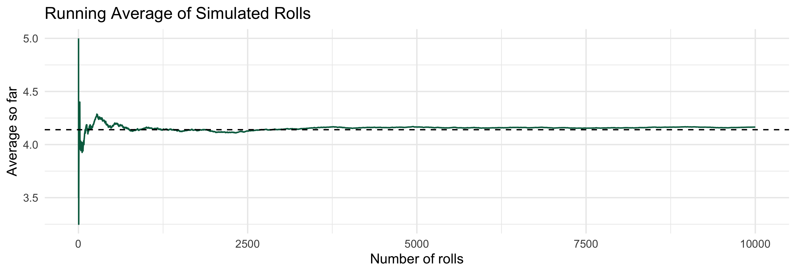

- 1
- Set the seed so we get the same random rolls every time we run the code.
- 2
-
Save the number of simulations as
reps, so it is easy to change later. - 3
- The probability of rolling 1, 2, 3, 4, 5, and 6, from the table in Example 2.
- 4
-
tibble()makes a table with one row per simulation, numbered 1 to 10,000. The pipe|>passes it to the next line. - 5
-
mutate()adds a columnXwith one roll per row.prob = die_probsmakes 5 come up half the time, 4 about 30% of the time, and so on.
Lesson 13: Expected Values
Learning Objectives
Define the expected value for discrete and continuous RVs
Calculate the expected value (mean) of a single discrete RV
Calculate the expected value (mean) of a single continuous RV
Calculate expected value for the sum of discrete or continuous RVs
Calculate expected value for joint densities (continuous RVs)
Where are we?

Learning Objectives
- Define the expected value for discrete and continuous RVs
Calculate the expected value (mean) of a single discrete RV
Calculate the expected value (mean) of a single continuous RV
Calculate expected value for the sum of discrete or continuous RVs
Calculate expected value for joint densities (continuous RVs)
Our good and fair friend, the 6-sided die
Example 1
Suppose you roll a fair 6-sided die. What value do you expect to get?
What is an expected value?
Definition: Expected value of discrete RV
The expected value of a discrete RV \(X\) that takes on values \(x_1, x_2, \ldots, x_n\) is \[\mathbb{E}[X] = \sum_{i=1}^n x_ip_X(x_i)\] where \(n\) can be \(\infty\)
Definition: Expected value of continuous RV
The expected value of a continuous RV \(X\) is \[\mathbb{E}[X] = \displaystyle\int_{-\infty}^\infty xf_X(x) dx\] where we adjust the integrand based on the bounds of \(X\)
- Expected values are not necessarily an actual outcome
- In previous example, we cannot roll a 3.5
- It could be that our expected value is not in the sample space (\(E(X) \notin S\))
Learning Objectives
- Define the expected value for discrete and continuous RVs
- Calculate the expected value (mean) of a single discrete RV
Calculate the expected value (mean) of a single continuous RV
Calculate expected value for the sum of discrete or continuous RVs
Calculate expected value for joint densities (continuous RVs)
Our good and not-so-fair friend, the 6-sided die
Example 2
Suppose the die is 6-sided, but not fair. And the probabilities of each side are distributed as:
| \(x\) | \(p_X(x)\) |
|---|---|
| 1 | 0.10 |
| 2 | 0.05 |
| 3 | 0.02 |
| 4 | 0.30 |
| 5 | 0.50 |
| 6 | 0.03 |
What value do you expect to get on a roll?
Let’s simulate our not-so-fair die
- Same idea as Lesson 2: simulate many rolls, then summarize
probgives the probability of each side, like the unfair coin in Lesson 1
- Average of the 10,000 simulated rolls:
1X_sims |>
summarise(average = mean(X))- 1
-
Collapse the 10,000 simulated values of
Xinto one number: their average.
# A tibble: 1 × 1
average
<dbl>
1 4.16
From Example 2, \(\mathbb{E}[X] = 1(0.10) + 2(0.05) + 3(0.02) + 4(0.30) + 5(0.50) + 6(0.03) = 4.14\)
The simulated average is very close!
The running average settles at \(\mathbb{E}[X]\)
- The expected value is the long-run average: after many rolls, the average of the rolls gets close to 4.14 (dashed line)
Show/Hide Code for the running average plot
1X_sims |>
2 mutate(running_avg = cumsum(X) / sim) |>
3 ggplot(aes(x = sim, y = running_avg)) +
4 geom_line(color = "#006a4e", linewidth = 1) +
5 geom_hline(yintercept = 4.14, linetype = "dashed") +
6 labs(title = "Running Average of Simulated Rolls",
x = "Number of rolls",
y = "Average so far") +
7 theme_minimal(base_size = 20)- 1
- Start with the 10,000 simulated rolls.
- 2
-
cumsum(X)adds up the rolls so far (the running total). Dividing bysim, the number of rolls so far, gives the average so far. - 3
-
Start a plot with the number of rolls on the x-axis and the average so far on the y-axis. Layers are added with
+. - 4
- Connect the averages with a line.
- 5
- Add a dashed horizontal line at the exact expected value, 4.14.
- 6
- Add a title and axis labels.
- 7
- Use a simple theme with larger text so the plot is readable on slides.

Expected value of a Bernoulli distribution
Example 3
Suppose \[X = \left\{ \begin{array}{ll} 1 & \quad \mathrm{with\ probability}\ p \quad\mathrm{(success)}\\ 0 & \quad \mathrm{with\ probability}\ 1-p \quad\mathrm{(failure)} \end{array} \right.\] Find the expected value of \(X\).
Let’s slightly change our random variable
Example 4
Suppose \[X = \left\{ \begin{array}{ll} 1 & \quad \mathrm{with\ probability}\ p \\ -1 & \quad \mathrm{with\ probability}\ 1-p \end{array} \right.\] Find the expected value of \(X\).
Bullseye! 🎯
Example 5
Suppose I throw darts at a dartboard until I hit the bullseye, and that my probability of hitting the bullseye is \(p\). Suppose further that all of my throws are independent, and that the probability of a bullseye never changes, no matter how many times I throw a dart. How many times should I expect to have to throw the dart until I hit the bullseye?
Ghost! 👻
Example 6
A ghost is trick-or-treating. It comes to a house where it is known that there are 30 candies in the bag and only one is a watermelon Jolly Rancher, which is the ghost’s favorite. The ghost takes pieces of candy without replacement until it gets the watermelon Jolly Rancher. How many pieces of candy do we expect the ghost to take?
Can we model this with a distribution?
Some remarks on last two examples
Both examples are repeated random processes. They are fundamentally different though:
The bullseye example is “with replacement” since the probability of success remains constant.
The ghost trick-or-treating example is without replacement, and thus the probability of success changes with each trial.
Learning Objectives
Define the expected value for discrete and continuous RVs
Calculate the expected value (mean) of a single discrete RV
- Calculate the expected value (mean) of a single continuous RV
Calculate expected value for the sum of discrete or continuous RVs
Calculate expected value for joint densities (continuous RVs)
Expected Value of the Uniform Distribution
Example 5
Let \(f_X(x)= \frac{1}{b-a}\), for \(a \leq x \leq b\). Find \(\mathbb{E}[X]\).
Expected Value of the Exponential Distribution
Example 6
Let \(f_X(x)= \lambda e^{-\lambda x}\), for \(x > 0\) and \(\lambda> 0\). Find \(\mathbb{E}[X]\).
Integrating by Parts
\(\displaystyle\int_a^b u dv = uv\bigg|^b_a - \displaystyle\int_a^b vdu\)
Learning Objectives
Define the expected value for discrete and continuous RVs
Calculate the expected value (mean) of a single discrete RV
Calculate the expected value (mean) of a single continuous RV
- Calculate expected value for the sum of discrete or continuous RVs
- Calculate expected value for joint densities (continuous RVs)
Revisiting our two card draw
Example 7
Suppose you draw 2 cards from a standard deck of cards with replacement. Let \(X\) be the number of hearts you draw. Find \(\mathbb{E}[X]\).
Recall Binomial RV with \(n=2\):
\[p_X(x) = {2 \choose x}p^x(1-p)^{2-x} \text{ for } x = 0, 1, 2\]
What if we draw A LOT of cards?
Example 8
What is the expected number of hearts in Example 7 if you draw 200 cards?
Recall Binomial RV with \(n=200\):
\[p_X(x) = {200 \choose x}p^x(1-p)^{200-x}\] \[\text{ for } x = 0, 1, 2, ..., 200\]
Sums of Random Variables
Theorem: Sum of random variables
For RVs (discrete or continuous) \(X_i\) and constants \(a_i\), \(i=1,2,\dots, n\), \[\mathbb{E}\Bigg[\sum_{i=1}^n a_iX_i\Bigg] = \sum_{i=1}^n a_i\mathbb{E}[X_i] .\] Remark: The theorem holds for infinitely many RVs \(X_i\) as well.
- For two RVs, \(X\) and \(Y\):
- We can say \(E[X+Y] = E[X] + E[Y]\)
- … and constant numbers \(a\) and \(b\), we can also say \(E[aX+bY] = aE[X] + bE[Y]\)
- We can also also say \(E[X-Y] = E[X] - E[Y]\), since \(b=-1\)
Corollaries from Theorem
Function with two constants
For a RV \(X\), and constants \(a\) and \(b\), \[\mathbb{E}[aX+b] = a\mathbb{E}[X] + b.\]
Expected value of sum of identically distributed RVs
If \(X_i\), \(i=1,2,\dots, n\), are identically distributed RV’s, then \[\mathbb{E}\bigg[\sum_{i=1}^n X_i\bigg] = n\mathbb{E}[X_1] .\]
Cost of hotel rooms
Example 8
A tour group is planning a visit to the city of Minneapolis and needs to book 30 hotel rooms. The average price of a room is $200. In addition, there is a 10% tourism tax for each room. What is the expected cost for the 30 hotel rooms?
Learning Objectives
Define the expected value for discrete and continuous RVs
Calculate the expected value (mean) of a single discrete RV
Calculate the expected value (mean) of a single continuous RV
Calculate expected value for the sum of discrete or continuous RVs
- Calculate expected value for joint densities (continuous RVs)
Expected value of one RV from joint pdf
If you have a joint distribution \(f_{X,Y}(x,y)\) and want to calculate \(\mathbb{E}[X]\), you have two options:
Find \(f_X(x)\) and use it to calculate \(\mathbb{E}[X]\).
Calculate \(\mathbb{E}[X]\) using the joint density: \[\mathbb{E}[X] = \int_{-\infty}^{\infty}\int_{-\infty}^{\infty}x f_{X,Y}(x,y)dydx.\]
You can do the same for \(\mathbb{E}[Y]\)!
Option 1: Find marginal first
Example 9
Let \(f_{X,Y}(x,y)= 2e^{-(x+y)}\), for \(0 \leq x \leq y\). Find \(\mathbb{E}[X]\).
Do this one at home by finding \(f_X(x)\) then \(\mathbb{E}[X] = \displaystyle\int_{-\infty}^\infty xf_X(x) dx\). See if you get the same result as next page’s answer!
Option 2: Expected value from a joint distribution
Example 9
Let \(f_{X,Y}(x,y)= 2e^{-(x+y)}\), for \(0 \leq x \leq y\). Find \(\mathbb{E}[X]\).
Learning Objectives
Define the expected value for discrete and continuous RVs
Calculate the expected value (mean) of a single discrete RV
Calculate the expected value (mean) of a single continuous RV
Calculate expected value for the sum of discrete or continuous RVs
Calculate expected value for joint densities (continuous RVs)